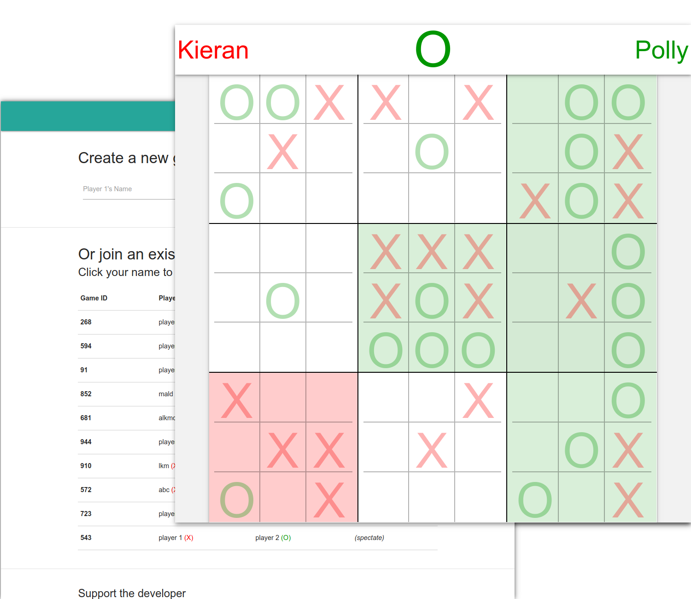
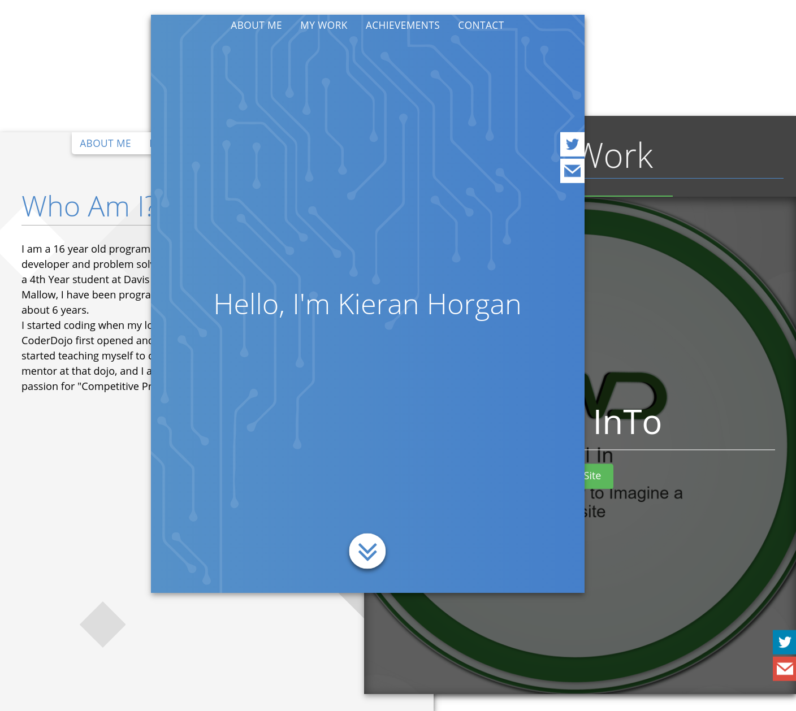
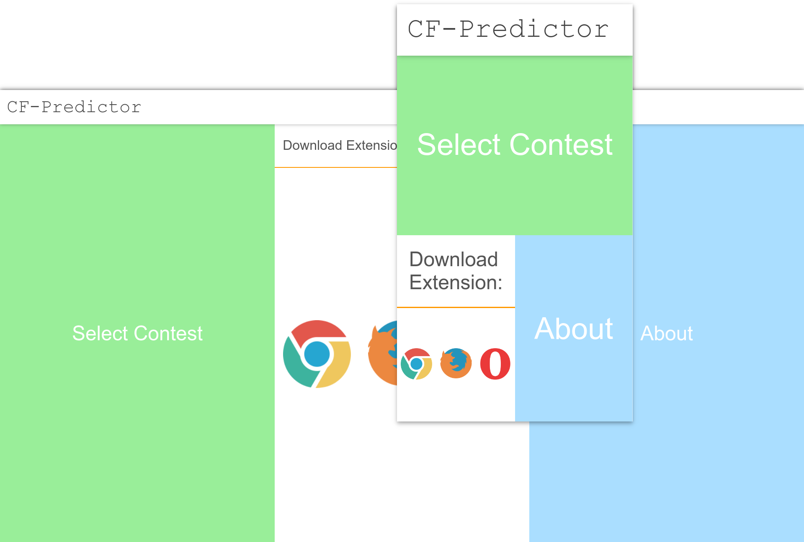
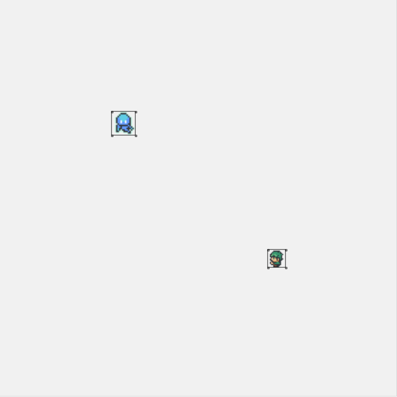

-
Pin Code Stat istics
Small web tool created for the UCC Open Day to promote the Psychology and Computing Course.
Technologies Used: MySQL, PHP, CSS

-
CoderDojo Mallow
Award-winning website built for my local coding club, was my first real project and probably still my proudest.
Technologies Used: jQuery, CSS, JavaScript, PHP

-
Ultimate Tic-Tac-Toe
A web game I made for me and my friends to play, it's like Tic-Tac-Toe but better!
Technologies Used: JavaScript., MySQL, PHP, CSS, Bootstrap
 -
Old Personal Site
A past attempt at a portfolio site.
Technologies Used: JavaScript, CSS
 -
Codeforces Predictor frontend
Redesigned the frontend of a tool for predicting rating changes on codeforces.
Technologies Used: CSS, Bootstrap
 -
Life of Rick
A small webgame me and a friend made in 3 hours at a NetSoc Game Jam event.
Technologies Used: JavaScript, HTML5 Canvas
